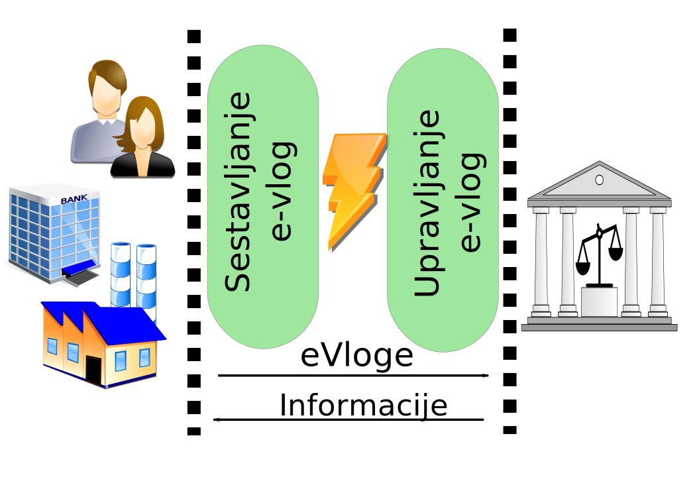
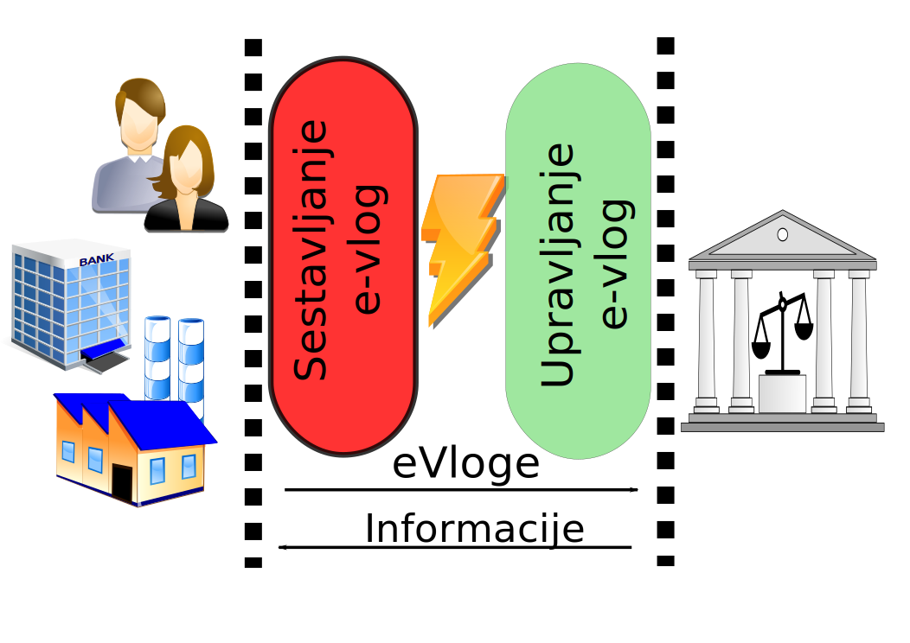
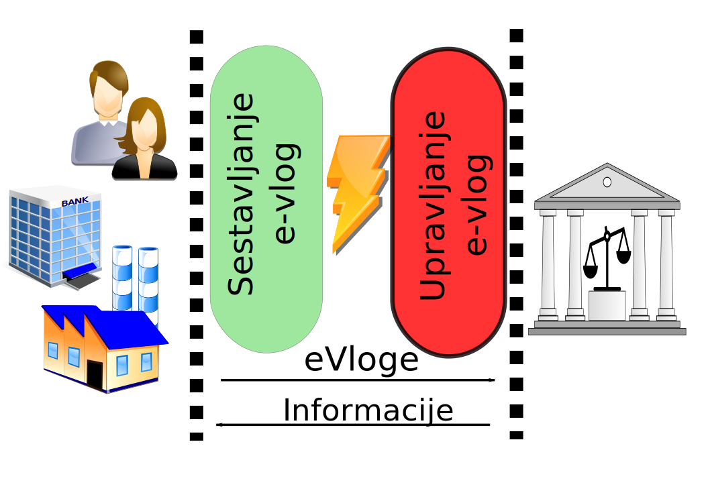
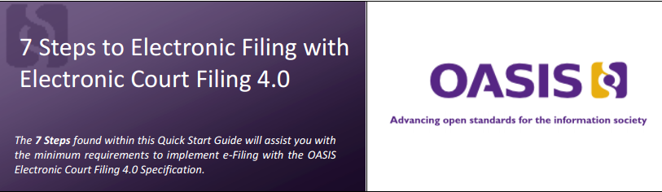
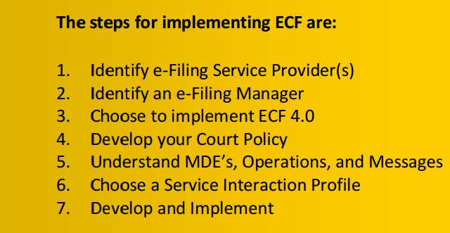
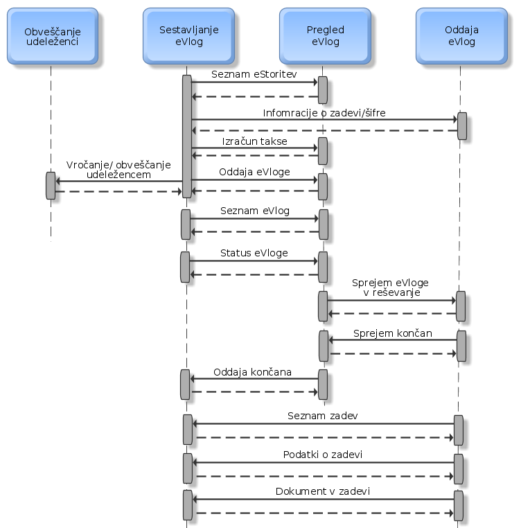
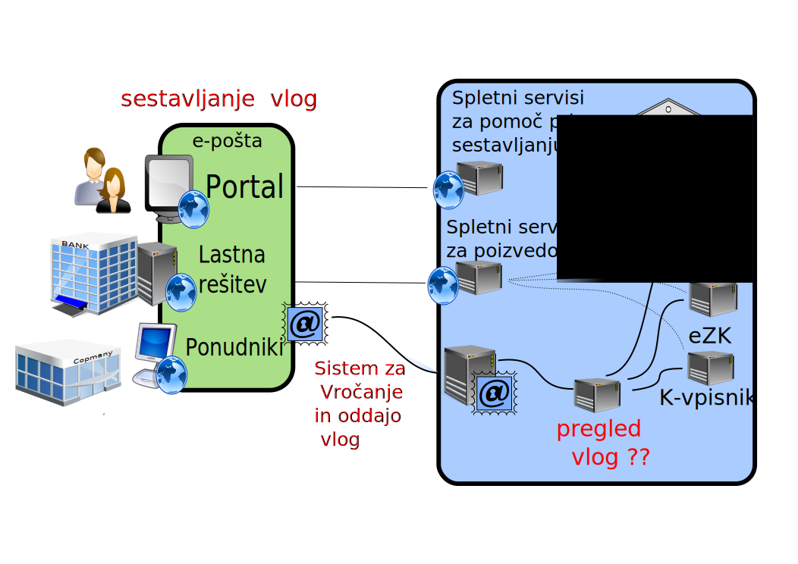
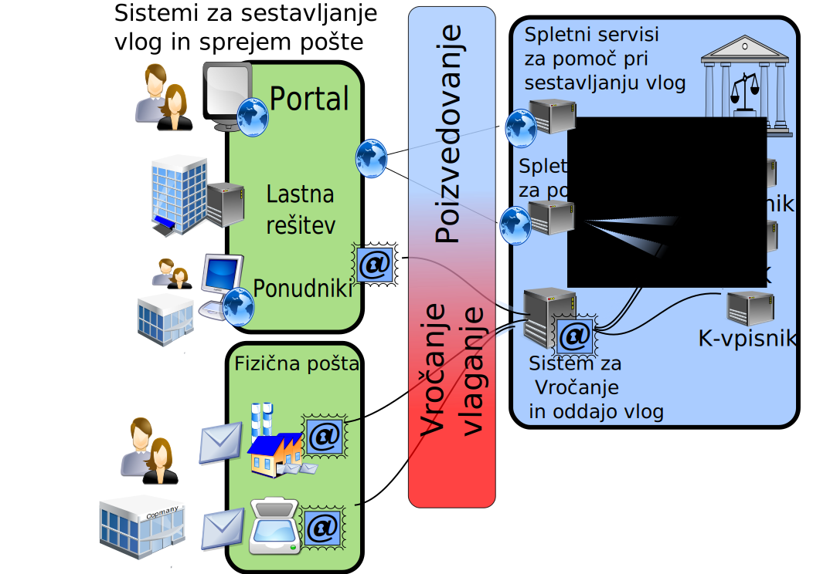

Your browser doesn't support the features required by impress.js, so you are presented with a simplified version of this presentation.
For the best experience please use the latest Chrome, Safari or Firefox browser.
OASIS ECF 4.0.1 ( Tehnični standard za e-vlaganje )
mag. Jože Rihtaršič
Ljubljana, 5. 11. 2016
OASIS Electronic Court Filing
Nastalo v sodelovanju z javnim sektorjem in zasebnimi podjetji.
Oasis ECF standard določa tehnično arhitekturo, nabor komponent, aktivnosti, pravila
in strukture sporočil za elektronsko vlaganje na sodišča.
Verzije standarda
LegalXML
ECF 1.0: March 22, 2000
ECF 1.1: July 7, 2002
ECF 3.0: November 11, 2005
ECF 3.01: April 25, 2006
ECF 3.1: December 4, 2007
ECF 4.0: October 8, 2008
ECF 4.01 Plus Errata 01: July 14, 2014
Sistem za izdelavo in upravljanjem e-vlog
Specifikacije določajo način elektronske izmenjave med sistemom za:
izdelavo e-vlog: (angl. e-Filling Service provider);
sprejem in upravljanje e-vlog (angl. e-Filling Manager): Upravljanje e-vlog združuje funkcionalnosti za preverjanje, urejanje,
dopolnjevanje in uvoz vlog v informacijski sistem sodišča.

Sistem za izdelavo e-vlog (eFSP)
ponudnik sistema za izdelavo eVlog: komercialni ponudniki sistema za e-vlaganje tržijo
orodja za izdelavo eVlog in njihovo vlaganje na sodišče;
lastna rešitev: sodišča lahko izdelajo lastni sistem za e-vlaganje, kot je na primer portal za
eVlaganje;
rešitev „po meri“: stranke sodišča nadgradijo lastne IS za sestavljanje in vlaganje eVlog
na sodišče.

Sistem za upravljanje e-vlog
komercialni ponudniki e-vlaganja izdelajo funkcionalnosti, ki jih potrebuje sodišče za
sprejem in uvoz e-vlog v informacijski sistem;
informacijski sistem za vodenje postopkov na sodišču ima izdelane tudi funkcionalnosti
za prevzem in upravljanje e-vlog;
lasten modul sodišča za prevzem in upravljanje e-vlog, ki je ločen od sistema za vodenje zadev.

NAMEN
Osnovni namen standarda je izdelati enotne tehnične specifikacije, ki bi omogočile integracije
med različnimi rešitvami za sestavljanje vlog pri strankah sodišč in različnimi rešivami za sprejem e-vlog v informacijski
sistem sodišč.
Vodnik za izdelavo eVlaganja

7 korakov

Arhitektura: Štiri gradniki
gradnik za sestavljanje e-vlog (angl. Filing Assembly MDE);
gradnik za pregled e-vlog (angl. Filing Review MDE);
gradnik za sprejem e-vloge (angl. Filing Record MDE);
gradnik za e-vročanje (angl. Legal Service MDE);
Potek oddaje

Predlog arhitekture

Predlog arhitekture

OASIS ECF Sheme
Vsako pravno področje ima svojo shemo.
AppellateCase:
ECF-4.0-AppellateCase.xsd
BankruptcyCase:
ECF-4.0-BankruptcyCase.xsd
CitationCase:
ECF-4.0-CitationCase.xsd
CivilCase:
ECF-4.0-CivilCase.xsd
CriminalCase:
ECF-4.0-CriminalCase.xsd
DomesticCase:
ECF-4.0-DomesticCase.xsd
JuvenileCase:
ECF-4.0-JuvenileCase.xsd
Povezujejo jih skupni gradniki za enake vsebine
(udeleženci, šifranti, dogodki, ...) ...).
Šifranti so skladni s šifranti celotne javne uprave (ecf -> National Information Exchange Model)